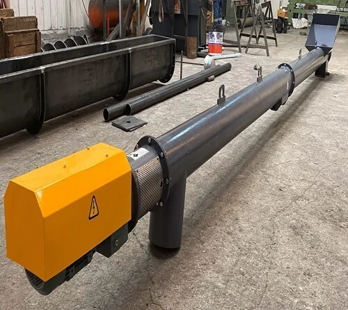
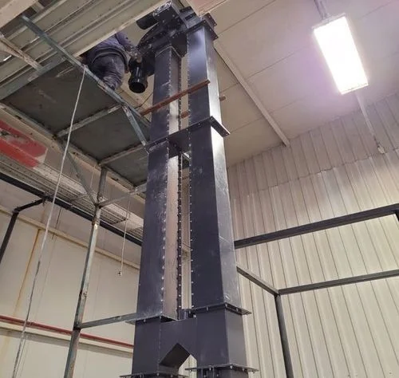
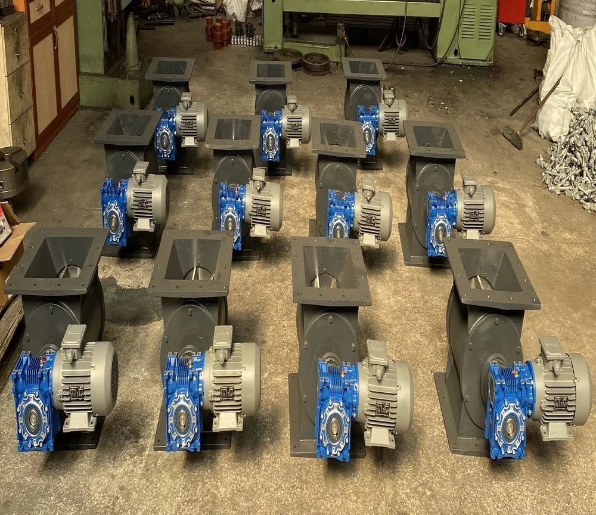
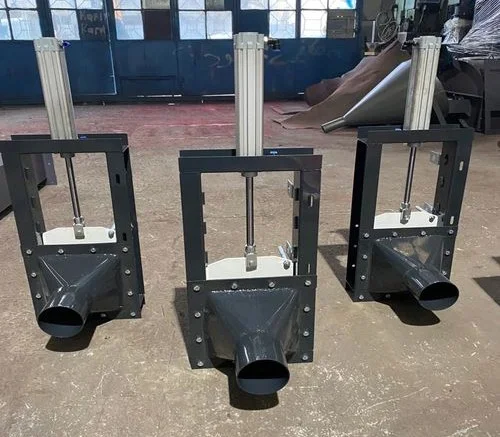
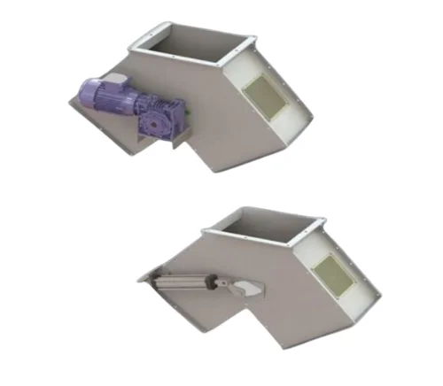

İnşaat & Çimento Endüstrisi için Konveyör Çözümleri
Çimento fabrikaları, hazır beton santralleri, alçı ve yapı kimyasalları üretim tesisleri için vidalı (helezon) konveyörler, kovalı elevatörler, hücre tekerleri ve sürgü/klape sistemleri üretiyoruz. Tozsuz çalışma ve hassas dozajlama.
İnşaat için teklif al →Sektörel Zorluklar
- ⚠Yoğun toz emisyonu ve çevre mevzuatı
- ⚠Aşındırıcı malzemelerin uzun ömürlü taşınması
- ⚠Hassas dozajlama ihtiyacı
- ⚠Silo ve bunker çıkış kontrolü
Faydalar
- ✓Çevre mevzuatına %100 uyum
- ✓Hassas dozajlama (±%1)
- ✓Düşük enerji tüketimi
- ✓Modüler ve genişletilebilir
Çözümlerimiz
Vidalı (Helezon) Konveyörler
Kapalı gövde, tozsuz çalışma — çimento, alçı ve yapı kimyasalları için ideal.
Kovalı Elevatörler
Silo dolumu için yüksek kapasiteli, sessiz ve aşınmaya dayanıklı düşey taşıma.
Hücre Tekeri & Sürgü
Filtre altı tahliye ve silo çıkışında hava sızdırmaz, hassas malzeme akışı.
Klape & Yönlendirme
Çoklu silo dağıtım hatlarında pnömatik / elektrik kumandalı yön değiştirme.
Önerilen Ürünler
Vidalı Konveyör (Helezon)
Toz, granül ve dökme malzeme için kapalı taşıma.

Kovalı Elevatör
Düşey yönde dökme malzeme taşıma sistemi.

Hücre Tekeri (Rotary Valve)
Basınçlı sistemlerde hassas malzeme besleme.

Sürgü (Slide Gate)
Silo ve hat çıkışlarında akış kontrolü.

Klape (Flap Valve)
Yön değiştirme ve akış yönlendirme valfi.